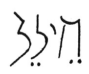
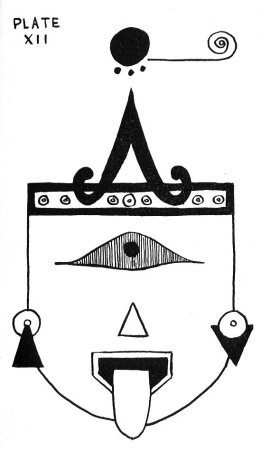

| Home > Other tongues - Other flesh > Other Tongues |
|---|
|  |
How art thou fallen from heaven, O Lucifer (O day star), son of the morning! How art thou cut down to the ground, which didst weaken the nations! For thou hast said in thine heart, I will ascend into heaven, I will exalt my throne above the stars of God: I will sit also upon the mount of the congregation, in the sides of the north: I will ascend above the heights of the clouds; I will be like the most High. Yet thou shalt be brought down to hell, to the sides of the pit. They that see thee shall narrowly look upon thee, and consider thee, saying, Is this the man that made the earth to tremble, that did shake kingdoms; that made the world as a wilderness, and destroyed the cities thereof; that opened not the house of his prisoners? All the kings of the nations, even all of them, lie in glory, everyone in his own house. But thou art cast out of thy grave like an abominable branch, and as the raiment of those that are slain, thrust through with a sword, that go down to the stones of the pit; as a carcass trodden under feet. Thou shalt not be joined with them in burial because thou hast destroyed thy land, and slain thy people: the seed of evil-doers shall never be renowned. Prepare slaughter for his children for the iniquity of their fathers; that they do not rise, nor possess the land, nor fill the face of the world with cities. For I will rise up against them, saith the Lord of hosts, and cut off from Babylon the name, and remnant, and son, and nephew, saith the Lord." (Isaiah 14:12-22).
The word Lucifer comes from a Latin word meaning, "Light-bringing", a name sometimes given by poets to the Moon, or to the planet Venus when it appears as the morning star and to the day. In ancient times, this word was wrongly interpreted to mean Satan.
The Hebrew meaning of the word seems to be "brilliant", "splendid", "illustrious", or as in the Septuagint, Vulgate, the Rabbinical commentators, Luther, and others, "brilliant star!" and in this sense was the proper name among the Hebrews of the morning star. Tertullian and Gregory the Great understood this passage of Isaiah in reference to the fall of Satan; in consequence of which the name Lucifer has since been applied to Satan; and this is now the usual acceptation of the word.
Dr. Henderson in his Isaiah renders the line: "How art thou fallen from heaven, O illustrious son of the morning!" Dr. Henderson says: "The application of this passage to Satan, and to the fall of the apostate angels, is one of those gross perversions of Sacred Writ which so extensively obtain, and which are to be traced to a proneness to seek for more in any given passage than it really contains."
The only place in the Holy Bible where the word Lucifer is found is in Isaiah. The early church fathers were under the impression that, the passage could only refer to Satan, the prince of darkness. However, Satan in the Bible has no connection with the Lucifer of Isaiah.
Isaiah was figuratively speaking of the king of Babylon in reference to his glory and pomp, but he was actually referring to the destruction of a planet known to the ancient world as the "shining one". Lucifer and its remains are now to be observed in the telescope as the Asteroid Belt.
By a curious chain of reference the passage in Luke 10:18 once was thought to refer to Isaiah 14:12, but this passage says: "I beheld Satan as Lightning fall from heaven." Even though this passage speaks of Satan, Lucifer became the chief of the fallen angels, the name borne by Satan before his rebellion. However, it must be stated again that Satan is in no way connected with Lucifer.
In "The Saucers Speak!" Zo said: "Your so-called Hydrogen Bomb could make an asteroid belt out of you. This happened many years ago to the planet of what you would call the fifth orbit. We knew what they were doing but we didn't interfere. We cannot stand by and see another waste. After their destruction there were terrible disasters on Masar (Mars). Great volcanic eruptions took place. Many of our people perished. We would have been thrown out of this Solar System and lost if we had not quickly constructed two artificial satellites. Some of you scientists have noticed that our so-called moons Phobos and Deimos reflect too much light to be made of earthy substance. They are right. They are metallic in nature. They readjusted our unstable condition and saved a planet."
It is true that the ancient poets knew of the satellites of Mars before their discovery and ancient astrological works mention them. Jonathon Swift in "Gulliver's Travels", 1726, wrote that Mars had two satellites and his complete description of them was most accurate. They were actually discovered as late as 1877 by Asaph Hall of the Naval Observatory in Washington, D. C. How did Swift and all these other individuals know that Mars had two moons?
If the Prophet Isaiah was actually referring to a "fallen star" or a destroyed planet let us see if his description as found in the fourteenth chapter fits such a happening.
To begin with he wonders how Lucifer, then a morning star, fell from heaven. A morning star now can be Jupiter, Mars, Saturn or Venus when rising shortly before the sun, and forming a conspicuous object in the sky just before dawn; hence, figuratively, a forerunner, or one who announces and guides. For a planet to be called the morning star it must be West of the sun and visible before sunrise. When bright planets are East of the sun and therefore visible in the early evening they are called evening stars. The ancients not realizing they were the same stars in different roles, called Venus when the evening star, Hesperus or Vesper and when it was the morning star, Phosphorus. Mercury was called Mercury when it was the evening star, but it was called Apollo when it was a morning star:
When we think of morning star now we immediately associate it with the planet Venus. Therefore, we think the ancient word Lucifer also applied to Venus. However, this is not the case. Venus and Mercury were known primarily as evening stars, but when Venus was a morning star it was called Phosphorus. (This word comes from the Greek, phos, light; and phero, bear). The Asteroid Belt, then the planet Lucifer, was also known as the morning star.
Did the destruction of Lucifer take place in Isaiah's time? This is not likely, for history tells us that there were great catastrophes on Earth as early as the 13th century B.C. And remember, space intelligences refer to our Earth as Saros (Saras) "the sorrowful planet", or the "planet of much cataclysm".
The Old Testament is literally full of references to the end of the planet known to the ancients of Earth as Lucifer, and to outer space intelligences as Maldek, the "silver-tongued". The first three letters of the planet's name (Mal) mean: tongue. For a moment, let us refer once again to James 3:5-10. There is a double meaning to be found here, for James is not only talking about the literal tongue of man, but he is speaking metaphorically of Maldek (Lucifer).
James 3:5: "Even so the tongue is a little member, and boasteth great things. Behold, how great a matter a little fire kindleth!"
In reference to Maldek, this could be translated: "Even so the planet Maldek (tongue) is a little world (member), and boasteth great things. Behold, how great a destruction (matter) a little explosion (fire) causes (kindleth!)."
James 3:6: "And the tongue is a fire, a world of iniquity: so is the tongue among our members, that it defileth the whole body, and setteth on fire the course of nature; and it is set on fire of hell."
This verse can also be translated: "And the tongue is a fire, that world of iniquity: the tongue is among our members that which defileth the whole body, and setteth on fire the wheel of nature (or birth), and is set on fire by hell (Gehenna)."
Referring again to Maldek, James 3:6 could read: "And Maldek (the tongue) is aflame (a fire), that would of iniquity: Maldek (the tongue) is among our planets (members) that which defileth the whole solar system (body), and setteth on fire the vortex (wheel) of nature (or birth), and is set on fire by the unseen state (hell)."
In Greek, hell is here translated as Gehenna (Hebrew, Gehinnom). Gehinnom was the valley of Hinnom, near Jerusalem, where the city's refuse was thrown and burned; hence, hell-fire and hell itself; the place of future torment of the wicked.
The last part of James 3:6 can also be translated: ". . . and it is set on fire of hell."
In referring to Maldek, this would give us: ". . . and Maldek (it) is set on fire of the unseen state (hell)."
This means that Maldek was a world of iniquity that exploded and burned and was a planet in our solar system that defiled all the other planets because of its evil, and Maldek (the tongue) set on fire its vortex, the power of its birth and being, and therefore was set on fire of the unseen state . . . because Maldek released the terrible hydrogen power she broke her vortex and was thereby reduced to an unseen state.
James 3:7: "For every kind of beast, and of birds, and of serpents, and of things in the sea, is tamed, and hath been tamed of mankind (nature of man)."
We see here that man in this solar system had tamed everything, for all things of nature were under his control.
James 3:8: "But the tongue can no man tame; it is an unruly evil full of deadly poison."
Man could not tame Maldek (the tongue) for it was an undisciplined child of the solar system, it wished to have power over all other planets and desired the authority of the Creator himself. Maldek was therefore "full of deadly poison".
James 3:9: "Therewith bless we God, even the Father; and therewith curse we men, which are made after the similitude of God."
Maldek (the tongue) praised the Father, but cursed all men who are in the likeness of God.
James 3:10: "Out of the same mouth proceedeth blessing and cursing. My brethern, these things ought not so to be."
Maldek blessed and cursed at the same time, but this is not living true Universal Law of the Infinite Father. These things should not exist side by side.
I mentioned before, that the Old Testament has many references to the destruction of Lucifer or Maldek. Maldek, as a world, came to an abrupt end during the Exodus from Egypt in the days of Moses (13th century before Christ). The Exodus took place amid a great natural upheaval that terminated the period of Egyptian history known as the Middle Kingdom. Contemporary Egyptian documents describe the same disaster accompanied by "the plagues of Egypt".
One of the first visible signs on Earth of the destruction of Maldek was the reddening of the earth's surface by a fine dust of rusty pigment. Ipuwer, an Egyptian eyewitness of the catastrophe, wrote his description on papyrus: "The river is blood. Plague is throughout the land. Blood is everywhere."
The Papyrus Ipuwer corresponds very well with the Book of Exodus 7:20: "All the waters that were in the river were turned to blood." And in Exodus 7:21: "There was blood throughout all the land of Egypt."
The presence of the red dust in the rivers caused the fish to die and there was decomposition and foul odor. Exodus 7:21: "And the river stank." Exodus 7:24: "And all the Egyptians digged round about the river for water to drink; for they could not drink of the water of the river." The Papyrus Ipuwer says: "Men shrink from tasting; human beings thirst after water. That is our water! That is our happiness! What shall we do in respect thereof? All is ruin."
Men had boils and sickness; cattle died from the irritating red dust. Exodus 93: "Behold, the hand of the Lord is upon thy cattle which is in the field, upon the horses, upon the asses, upon the camels, upon the oxen, and upon the sheep: there shall be a very grievous murrain (pestilence or plague)."
After the coming of the red dust, another strange phenomenon took place. Exodus 9:8: "And the Lord said unto Moses and unto Aaron, Take to you handfuls of ashes of the furnace, and let Moses sprinkle it toward the heaven in the sight of Pharaoh." Exodus 9:9: "And it shall become small dust in all the land of Egypt, and shall be a boil breaking forth with blains upon man, and upon beast, throughout all the land of Egypt."
This "small dust", like "ashes of the furnace", sounds identically the same as the radioactive ash that fell on men and animals in the Pacific Ocean after atomic tests there recently. Even some of the fish were contaminated. It is possible that this "small dust" or "ash" was the radioactive material sent out after the explosion of Maldek and entered the Earth's atmosphere before the next happening . . . the shower of meteorites that struck Earth.
Exodus 9:18: "Behold, to-morrow about this time I will cause it to rain a very grievous hail, such as hath not been in Egypt since the foundation thereof even until now." Stones of "barad" are translated here as "hail". However, "barad" is the term for meteorites. Midrashic sources and the Babylonian Talmud tell us that the stones which fell on Egypt were hot. Therefore, the "hail" could not have been ice, for this description fits only meteorites. The ancient Egyptian word for "hail" was ar, and means a driving shower of sand and stones. Also, in the Book of Joshua it is said that "great stones" fell from the sky, and they are called: "stones of barad".
Exodus 9:24: "So there was hail, and fire mingled with the hail, very grievous, such as there was none like it in all the land of Egypt since it became a nation." Exodus 9:25: "And the hail smote throughout all the land of Egypt all that was in the field, both man and beast; and the hail smote every herb of the field, and brake every tree of the field."
Exodus 9:28: "Entreat the Lord (for it is enough) that there be no mighty thunderings (voices of God) and hail; and I will let you go, and ye shall stay no longer."
The fall of meteorites is accompanied by explosion-like noises and in this case the crashes were "mighty".
The Papyrus Ipuwer says: "Trees are destroyed, no fruits, no herbs are found, grain has perished on every side, that has perished which yesterday was seen. The land is left to its weariness like the cutting of flax."
In the Visuddhi-Magga, a Buddhist text on world cycles, we find: "When a world cycle is destroyed by wind, there arises in the beginning a cycle-destroying great cloud. There arises a wind to destroy the world cycle, and first it raises a fine dust, and then coarse dust, and then fine sand, and then coarse sand, and then grit, stones, up to boulders as large as mighty trees on the hilltop."
So, Maldek came to an end with the coming of the red dust in the time of Moses and the Exodus from Egypt. As time went on the Earth was engulfed in more dense matter from the fallen planet.
Exodus 10:22-23: "And there was a thick darkness in all the land of Egypt three days: They saw not one another, neither rose any from his place for three days."
Maldek caused terrible destruction on Earth and darkness was over the entire world. Mars was also greatly damaged by this catastrophe and that will be taken up later on.
The Papyrus Ipuwer speaks of a great earthquake: "The towns are destroyed. Upper Egypt has become waste. All is ruin. The residence is overturned in a minute."
Exodus 12:30: "And Pharaoh rose up in the night, he, and all his servants, and all the Egyptians; and there was not a house where there was not one dead."
It should be stated here that the word Marduk may have come from Maldek. Marduk was the chief god of the Babylonian pantheon . . . from his mouth issued flame. In the battle of Marduk with Tiamat, "he (Marduk) created the evil wind, and the tempest, and the hurricane, and the fourfold wind, and the sevenfold wind, and the whirlwind, and the wind which had no equal."
This description fits Maldek who created chaos with hydrogen devices or "the evil wind". Maldek, therefore, created "the wind which had no equal". Hydrogen detonations are without equal because they will completely destroy a planet if used. I must pause here for awhile in order to say that no true hydrogen bomb, as such, has ever been detonated on Earth!
Van Tassel has shown us that space intelligences are not particularly concerned with the explosion of plutonium and U325, the Uranium mother element, because this atom is an inert element. But they are concerned with the attempt to explode an actual hydrogen bomb. If we had set-off such a bomb we would now be nothing but a bunch of floating cinders . . . we would be as Maldek, an asteroid belt. Space friends vowed that they would never again allow a planet in this Solar System to destroy itself; therefore, no government on Earth will explode true hydrogen . . . it will not be allowed.
The element hydrogen is life-giving along with five other elements in the air we breathe, in the water we drink, and in the composition of our physical self. Explode a true H-bomb and all life on Earth will be extinguished. Van Tassel told us months and months ago that our scientists were "tinkering" with a formula they did not understand. The explosion of an atom of inert substance and that of a living substance are two different things.
Hydrogen "devices" have utilized deuterium and tritium, not hydrogen, as such. The elements exist in simplest form as atoms, and these atoms are composed of a nucleus about which electrons revolve. Elements are distinguished from each other by the number of electrons revolving about the central nucleus. Each electron carries a negative electrical charge which is off-set by a positively charged particle in the nucleus known as a proton. Elements may contain additional particles in the nucleus, which carry no electrical charge and are known as neutrons.
All of this basic explanation is to show why no true hydrogen bomb has been detonated. The simplest element is hydrogen which in its most common form consists of one electron and thus one proton in each atom. Two other forms of hydrogen are known which, in addition to the one electron and one proton also have respectively one and two neutrons in their atomic structure. These two rare forms of hydrogen are known as deuterium and tritium. Deuterium exists in the proportion of one atom of deuterium to every sixty-four hundred atoms of ordinary hydrogen, in nature. Tritium is an artificial radioactive element. Because their masses are so greatly different in proportion to ordinary hydrogen, the differences in properties are quite marked.
Deuterium and tritium then, are isotopes of hydrogen, and because of their extreme rarity it is possible that they would not have the dangerous "chain-reaction" results that common or ordinary hydrogen would . . . for hydrogen of the common type is found in all living things on Earth. To create and detonate a true H-bomb would be to announce to the rest of the Universe that the planet Earth had suddenly come to an end like a flaming, exploding star in the corner of the Milky Way Galaxy. The history of Maldek would repeat itself: "How art thou fallen from heaven, O Earth . . ."
In getting back to Marduk, we find that in his battle with Tiamat, mother of the gods, he killed her and when he became the most powerful of all things he set about to create order in the universe. He then split Tiamat's body in two. This sounds like Maldek battling the elements of nature and finally subduing the atomic power (mother of the gods or forces). Maldek became powerful because of this mastery and attempted to rule all other planets. Maldek split this hydrogen force of nature (Tiamat).
After the Exodus from Egypt, the Wandering in the Desert lasted for forty years according to the Holy Bible. Then for a number of years the conquest of Palestine went on. Between the time when the Israelites left the desert and started the difficult task of the conquest, and the time of the battle at Beth-horon, twelve years may easily have passed. According to rabbinical sources the war of conquest in Palestine lasted fourteen years. During the fifty-two years between the catastrophe of the Exodus and the time of Joshua commanding the Sun to stand still at the battle of Beth-horon, the Earth was shrouded in dense clouds and the observation of the stars was difficult.
The Book of Joshua was compiled from the more ancient Book of Jasher.
Joshua 10:11-13: "And it came to pass, as they fled from before Israel, and were in the going down to Beth-boron, that the Lord cast down great stones from heaven upon them unto Azekah, and they died: they were more which died with hailstones than they whom the children of Israel slew with the sword. Then spake Joshua to the Lord in the day when the Lord delivered up the Amorites before the children of Israel, and he said in the sight of Israel, Sun, stand thou still upon Gibeon; and thou, Moon, in the valley of Ajalon. And the sun stood still, and the moon stayed, until the people had avenged themselves upon their enemies. Is not this written in the book of Jasher? So the sun stood still in the midst of heaven, and hasted not to go down about a whole day."
Therefore, about fifty-two years passed after the Exodus before the Earth encountered another swarm of meteorites from the destroyed Lucifer-Maldek. At least, there wasn't any major catastrophe until the time of Joshua.
It should be mentioned that the Book of Jasher is one of the long-lost, and long-sought for sacred books, which should have been included among the other books of the Bible but which was not because the original manuscript could not be located. In Joshua 10:13, it says: "Is not this written in the book of Jasher?" And the account is to be found in the Book of Jasher 30:11.
In reference to the fifty-two year period, it is interesting to note that the natives of pre-Columbian Mexico expected a new catastrophe at the end of every period of fifty-two years. Fernando de Alva Ixtlilxochitl (circa 1568-1648) was a great early Mexican scholar. He claimed that only fifty-two years elapsed between two great world catastrophes, and each of these catastrophes terminated a world age.
Because of the memory of the catastrophe, the people of the Earth feared it would occur again, but not much happened until the eighth century before Christ, in the days of Uzziah, king of Jerusalem. At this time there occurred a devastating catastrophe called raash or "commotion". Raash is translated "earthquake". Amos lived at this time and predicted some sort of great cosmic upheaval before the raash took place. Later, Isaiah, Joel, Hosea, and Micah all declared that the Earth would encounter more of the same in the future. Many generations later it was remembered how the people "fled from before the earthquake (raash) in the days of Uzziah king of Judah". (Zechariah 14:5). Uzziah reigned from about 189 to about 740, and since a new calendar was introduced in the Middle East in the year 747 B.C., the great upheaval or "commotion" must have taken place in that year of 747.
Hebrew sources say that the Prophet Isaiah began to prophesy immediately after the "commotion" of the days of king Uzziah. He said:
Isaiah 1:7: "Your country is desolate, your cities are burned with fire: your land, strangers devour it in your presence, and it is desolate, as overthrown by strangers."
Isaiah prophesied in "the days of Uzziah, Jotham, Ahaz, and Hezekiah, kings of Judah". Somehow, Isaiah knew that at intervals of fifteen years a catastrophe occurred. The "commotion" of the days of Uzziah was only the beginning of sorrows and more destruction caused by Lucifer-Maldek.
I believe that Isaiah was visited by space intelligences who told him that catastrophe would come to Earth caused by the great fragments of Maldek. The space friends would have been able to calculate the time that the destruction would return. Proof of this is found in Isaiah 6:1-3: "In the year that king Uzziah died I saw also the Lord sitting upon a throne, high and lifted up, and his train filled the temple. Above it stood the seraphim: each one had six wings; with twain he covered his face, and with twain he covered his feet, and with twain he did fly. And one cried unto another, and said, Holy, holy, holy, is the Lord of hosts: the whole earth is full of his glory."
Isaiah 6:-12: "Then flew one of the seraphim unto me, having a live coal in his hand, which he had taken with the tongs from off the altar: And he laid it upon my mouth, and said, Lo, this hath touched thy lips: and thine iniquity is taken away, and thy sin purged. Also I heard the voice of the Lord, saying, Whom shall I send, and who will go for us? Then said I, Here am I; send me. And he said, Go, and tell this people, Hear ye indeed, but understand not; and see ye indeed, but perceive not. Make the heart of this people fat, and make their ears heavy, and shut their eyes; lest they see with their eyes, and hear with their ears, and understand with their heart, and convert, and be healed. Then said I, Lord, how long? And he answered, Until the cities be wasted without inhabitant, and the houses without man, and the land be utterly desolate. And the Lord have removed men far away, and there be a great forsaking in the midst of the land."
The space visitors told Isaiah to go and tell the people until "the cities be wasted without inhabitant", "And the Lord have removed men far away". This sounds as though some people were taken by space craft to a safer place.
In reflecting on the terror that Lucifer-Maldek had caused for many centuries since the Exodus, Isaiah was inspired to write: "How art thou fallen from heaven, O Lucifer, son of the morning!" Then the prophet asks how Lucifer was "cut down to the ground, which didst weaken the nations!" Therefore, Lucifer's destruction along with the Earth receiving a pounding over many years by meteor showers, caused the nations to be weakened. Many people will ask: "We have meteor showers now, why don't we have great catastrophe like they had in the time of Moses, Joshua or Isaiah?" It is true that we do have meteor showers in this day and age, but they are nothing compared to what the Lucifer-Maldek showers were, for these showers were much more dense.
Somehow Isaiah knew that the planet Lucifer had tried to become the ruling world of the Universe, for he says: "For thou hast said in thine heart, I will ascend into heaven, I will exalt my throne above the stars of God." Lucifer intended to rule all the worlds (stars).
Then Isaiah says: "Yet thou shalt be brought down to hell, to the sides of the pit." In Hebrew and Greek, the literal meaning of hell is "the unseen state", and the meaning of hades is "the unseen world". Therefore, Isaiah, meant that Lucifer was brought down to an unseen state . . . after the destruction it was an unseen world.
Isaiah said, "They that see thee shall narrowly look upon thee, and consider thee." Did he mean that observation would be difficult? The largest of the asteroids is Ceres, and it is only 480 miles in diameter. Ceres along with the brightest asteroids is said to be sometimes visible to the naked eye, when nearest to our Earth and under exceptionally favorable conditions, but the rest are, naturally, telescopic, as their size is too small in relation to their distance. Is this what Isaiah meant when he said: "They that see thee shall narrowly look upon thee?"
The prophet said that those who looked on Lucifer later would say: "Is this the man that made the earth to tremble, that did shake kingdoms; that made the world as a wilderness and destroyed the cities thereof; that opened not the house of his prisoners? (or, did not let his prisoners loose home-wards)."
In calling Lucifer a man it would seem that the prophet was referring to an actual person, perhaps the king of Babylon. But this is not the case. In Hebrew, there are four words that can mean man. One of these words means: a man, human being; another means: a man, a mortal; and another means: a male. But the word man used in Isaiah 14:16 means: a husband, individual.
Therefore, Isaiah is saying: "Is this the individual that made the earth to tremble . . . ." Or, he is saying: "Is this the husband that made the earth to tremble . . . ."? In neither case does it imply that Lucifer was an actual man! Lucifer could represent a husband very well, because the planet Maldek had a moon. This moon was known as Lilith. A moon is often feminine and the moon deity is usually a goddess. The Greek goddesses Selene, Artemis, and Hecate were all identified with the moon. According to Moslem tradition Lilith cohabited with the Devil (from Lucifer?) and was even his wife.
In our contacts with space intelligences in Northern Arizona, the planet Lucifer was always referred to as Maldek (Maldec) and its moon was called Malona. Father Lorber also mentions Malona in his work. He is discussed in this book under The Great Influx in the section called: God Provided--Man Divided.
Isaiah says that Lucifer shook kingdoms, made the world a wilderness, and destroyed her cities. This is certainly true as we can see from the references already given. Cities and fields were pelted with meteoric fragments, the earth was shaken with earthquakes.
Lucifer did not open "the house of his prisoners" and he "did not let his prisoners loose homewards". Those responsible for the destruction of Lucifer-Maldek were "prisoners" of their own making. They were not allowed to leave the doomed planet and suffered the same fate as their world. They were "freed" when the planet was destroyed because they lost their physical equipment and were known as spirits again.
Isaiah says: "But thou art cast out of thy grave like an abominable branch." All other worlds go through space in majesty, but Lucifer didn't even have a final resting place. The blasted fragments of a once beautiful and proud planet were left to float endlessly in space that others might know what Lucifer had done. It would be a warning to all others that this should not be. It is interesting to note here that in May, 1854, Leverrier read a paper before the French Academy upon the asteroids, their eccentric orbits and irregularities. He said that the hypothesis stated by Dr. Olbers that the asteroids were derived from the wreck of a larger planet that had exploded, is incompatible with the real truth, inasmuch as the forces necessary to launch the fragments of a given body in such different routes would be of such improbable intensity as to render it mathematically absurd! Leverrier didn't know what a hydrogen detonation could do!
The prophet then tells us: "Thou shalt not be joined with them in burial, because thou hast destroyed thy land, and slain thy people." Lucifer was not to end its days as other worlds which had completed their usefulness. Because of the evil of this planet, its land and people were destroyed in a horrible holocaust. "The seed of evil-doers shall never be renowned."
Because of Lucifer's self-destruction, his children or people would "not rise, nor possess the land, nor fill the face of the world with cities". The spirits from Lucifer were not to reincarnate on Earth to the extent that they would hold dominion over it in "cities".
"For I will rise up against them, saith the Lord of hosts, and cut off from Babylon the name, and remnant, and son, and nephew, saith the Lord."
Swedenborg, in his Science of Correspondences tells us that Babel, or Babylon represents those whose externals appear holy, while their internals are profane. In the prophets of the Old Testament, Babylon means the profanation of good, and Chaldea means the profanation of truth. According to Swedenborg, Lucifer signifies self-love, the profaning of holy things. Lucifer means the same as Babel. It is from the self-love of Lucifer that we get the modern phrase: "Proud as Lucifer".
This again applies to the reincarnational cycle of Luciferians. They were to be completely cut off from "the profanation of good". Never again would such a destruction take place in our Solar System. They would not be allowed to encourage the internal profanity of those on Earth.
In Isaiah 14:29, we read: "Rejoice not thou, whole Palestina, because the rod of him that smote thee is broken: for out of the serpent's root shall come forth a cockatrice, and his fruit shall be a fiery flying serpent."
This could be translated: "Rejoice not all you who conceive false principles, because the vortex of Lucifer who struck you with force is broken: for out of the center of the coiled, spiral vortex shall come forth a venomous serpent that will corrupt and tread, and the fruit of this will be a fiery flying serpent."
A cockatrice was a fabulous serpent with deadly glance, reputed to be hatched by a serpent from a cock's egg, and commonly represented with the head, legs, and wings of a cock and the body and tail of a serpent. The word cockatrices comes from the word cocatris (corrupt), and calcare (to tread). When cockatrice is used in the Bible it means an unidentified venomous serpent.
Swedenborg tells us that Palestina (Philisthea) means those who conceive false principles and reason thence concerning spiritual things which overflow man. All those who conceive falsely are told not to rejoice just because Lucifer was destroyed by having its vortex shattered, because out of the center (root) of the coiled, spiral vortex (serpent) would come an unidentified destructive object that would corrupt and tread the land, and the result or product (fruit) of this would be a fiery, flying object.
Here we see that the people are warned that the catastrophe is not over yet because a large meteoric fragment will head for the Earth and it will divide into smaller fragments like "fiery flying serpents" and when it strikes the Earth it will "corrupt and tread the land". One object, perhaps larger than the rest, is mentioned specifically.
The Great Meteor Crater near Canyon Diablo in Arizona, about six miles south of the Sunshine Station of the Santa Fe Railroad, was evidently caused by one of the "fiery serpents". These meteors were thus described by the ancients because as they headed for Earth they did, indeed, look like flaming dragons or snakes. It is important to note in this connection that the morning star of the Toltecs, Quetzal-cohuatl, is represented as a great dragon or serpent: "cothuatl" in Nahuatl is "serpent", and the name means "a feathered serpent". The morning star of the Chichimec Indian tribe in Mexico is called "serpent cloud".
The ancestors of the present day Navajo Indians are said to have seen one of their gods come down from the sky in a cloud of fire and bury himself in the ground at the spot where the Great Meteor Crater exists in Arizona. A cedar tree on the rim of the crater grew to be over seven hundred years old. Some scientists think that the meteor that caused this tremendous crater may have been a small comet. And what better description would fit a comet than a "feathered serpent"?
Of course, Meteor Crater was not formed by a "true" comet, but the meteor itself was of such tremendous size, it would seem more like a comet than a meteor, which we associate with little "shooting stars". The meteorite weighs somewhere between a million and ten million tons. It threw out between three and four hundred million tons of rock when it hit the earth. The crater is about 4,100 feet wide, about 570 feet deep, and about three miles around. The outside rim is over one hundred feet high. The time when it fell is unknown. Scientists say probably more than one thousand years ago and maybe as much as fifty thousand years ago.
However, the fall of this gigantic meteorite is found in the legends of the Navajo Indians, and this tribe hasn't been in the Southwestern area very long. They came from Canada "hundreds", not "thousands" of years ago. Therefore, it is believed that this great meteor was a part of the "fiery flying serpent" that headed for Earth in the time of Isaiah the prophet.
Isaiah 24:17-19: "Fear and the pit, and the snare are upon thee, O inhabitant of the earth . . . for the windows from on high are open, and the foundations of the earth do shake. The earth is utterly broken down, the earth is clean dissolved, the earth is moved exceedingly."
When did the catastrophe come? Isaiah 14:28: "In the year that King Ahaz died was this burden." Ahaz was the son of Jotham, King of Judah, and father of Hezekiah. Ahaz succeeded his father as eleventh King of Judah, and reigned sixteen years. (740-724 B.C.). Therefore, the catastrophe came on the day on which King Ahaz was buried, some-time in 724 B.C.
Isaiah 24:1: "Behold, the Lord maketh the earth empty, and maketh it waste, and turneth it upside down, and scattereth abroad the inhabitants thereof."
Isaiah continued his ministry until about 690 B.C. His name means: "helper". And he did everything he could to help and warn the people of the impending catastrophes. After the death of King Ahaz, Hezekiah was King of Judah and during his fourteenth year another catastrophe was expected.
Isaiah 28:2: "Behold, the Lord hath a mighty and strong one, which as a tempest of hail and a destroying storm, as a flood of mighty waters overflowing, shall cast down to the earth with the hand."
A "mighty and strong" heavenly body was to be cast down to Earth.
Isaiah 29:5-6: "Moreover the multitude of thy strangers shall be like small dust, and the multitude of the terrible ones shall be as chaff that passeth away: yea, it shall be at an instant suddenly. Thou shalt be visited of the Lord of hosts with thunder, and with earthquake, and great noise, with storm and tempest, and the flame of devouring fire."
Isaiah 28:21: "For the Lord . . . shall be wroth as in the valley of Gibeon, that he may do his work, his strange work; and bring to pass his act, his strange act."
This refers to the "strange act" in the valley of Gibeon when Joshua witnessed a meteoric shower and commanded the sun to stand still. Isaiah knew of this happening and says the new catastrophe will be similar to it.
The prophet referred his readers to the "Book of the Lord". Isaiah 34:16: "Seek ye out the book of the Lord, and read: no one of these shall fail." Evidently this book belonged to the same series as the Book of Jasher, in which the records of the days of Joshua at Gibeon were preserved. Other ancient records must have been in the "Book of the Lord". The Book of Jasher is once more avail-able, but the other book is still lost.
There were more catastrophes in the years ahead, but there is not sufficient room here to list all of them.
Planets of our Solar System were greatly disturbed by the destruction of Lucifer-Maldek, and its moon Lilith-Malona. The Chinese say: "In the tenth year of the Emperor Kwei, the eighteenth monarch since Yahou, the five planets went out of their courses. In the night stars fell like rain. The earth shook."
Mars and the Earth suffered more from Lucifer than any of the other worlds. The two moons of Mars have already been mentioned, however, other facts must be added. How could Jonathan Swift have guessed not only their number (two), but their size and their short revolutions? Homer knew about the "two steeds of Mars" and Virgil wrote about them. Asaph Hall gave the names of Phobos (Fear) and Deimos (Panic) to these two moons. These names were suggested by Mr. Madan of Eton, England because the ancients said Mars had two steeds and gave them these names. It should also be mentioned that Voltaire told of these moons in the story of Micromegas more than a hundred years before their discovery!
Phobos, the inner satellite, revolves at the distance of 5800 miles from the center of Mars, and 3700 miles from the surface; it completes a sidereal revolution in only 7h 39m, a period less than one third that of the planet's rotation. As viewed from the planet, therefore, it rises in the west and sets in the east. No other known satellite in the solar system revolves in a shorter interval than the rotation period of its primary.
The distance of Deimos from the center of Mars is 14,600 miles, and its period of revolution is 30h-18m. It is smaller than the inner satellite (5 miles?), and only one third as bright. The size (diameter) of these satellites is not exactly known. Phobos is about ten miles in diameter and Deimos is about five miles in diameter.
In mythology, the two steeds were yoked when the Greek god of war, Ares (Mars) prepared to descend to the earth on a punitive expedition. This sounds like the two artificial satellites (steeds) of Mars were used together for launching plateforms before Mars sent spaceships to the undisciplined Earth in ancient times. To "yoke" animals, means to join the heads or necks of animals for working together.
In the eighth century before Christ, Mars suddenly became a great and feared god. In Babylon and other ancient centers, prayers were composed and invocations and hymns were sung, many magic formulae were used in incantations. These prayers with lifted hands were addressed directly to the planet Nergal (Mars). Like the Greek Ares, Nergal is called "king of battle". Mars became the great sword god, because in one of its conjunctions, its atmosphere was stretched so that it appeared like a sword.
The Chaldean Nergal is called "Sword-god", and the Roman god Mars was depicted with a sword. In Babylonian inscriptions of the seventh century, Mars was called "the most violent among the gods". Great good Mars became the frightful god of war.
Remember what Zo told us: "After their (Luciferians) destruction there were terrible disasters on Masar (Mars). Great volcanic eruptions took place. Many of our people perished." Mars literally then, became a "horrible, raging Flame-god . . ."
Evidently the people of Mars knew what was coming so they constructed the two artificial satellites known as Phobos and Deimos. These two objects were well named (Fear and Panic) for they were created during a time of great fear, not only on Mars but on Earth as well. And there certainly was panic as Isaiah has shown us.
Although Lucifer actually came to an end in the time of the Exodus, it is believed that Mars did not receive as much of the destructive force of the blast as Earth did. This was due to its orbital position at the time. Mars took the main shock in the time of Isaiah.
Nergal (Mars) was the war god of the men of Cuth whom Shalmaneser placed in the cities of Israel in place of the ten tribes. II Kings 17:30: "And the men of Babylon made Succoth-benoth, and the men of Cuth made Nergal, and the men of Hamath made Ashima."
The two "moons" of Mars readjusted the unstable condition caused by Lucifer-Maldek and balanced the Resonating Electro-Magnetic Field of the Plan-et. Moons are "balancers" of planets with which they are connected.
The people of Maldek who had been tampering with the force of "the terrible wind that has no equal", were warned by members of the Universal Tribunal on Saturn that their doom was certain if they carried out their plans to detonate actual hydrogen. But they would not listen; therefore, the children of Maldek and the innocent were removed to other worlds. The "black magicians" and "scientists of the left hand path" were left on Maldek to greet chaos of their own making. They believed that if by some chance the hydrogen would not do what was expected of it they would have control of the greatest power in Creation. They could then exalt their "throne above the stars of God".
They would "be like the most High". But since evil destroys evil, the proud Lucifer was "brought down to hell (the unseen state)". What was to come of the spirits of those who perished in the fall of this world?
The allegory of the Fall of Man and the fire of Prometheus is also another version of the myth of the rebellion of the proud Lucifer, hurled down to the bottomless pit, Orcus. In the religion of the Brahmans, Maha-sura, the Hindu Lucifer, becomes envious of the Creator's resplendent light, and at the head of a legion of inferior spirits rebels against Brahma, and declares war against him. Siva, the third person of the Hindu trinity, hurls them all from the celestial abode into Honderah, the region of eternal darkness. But here the fallen angels are made to repent of their evil deed, and in the Hindu doctrine they are all afforded the opportunity to progress.
Therefore, the souls of those responsible for the fate of Lucifer-Maldek were sent to some far off world or worlds in interstellar space, a "region of eternal darkness". Through countless lives they will be made aware of the enormity of their crime to their fellow man. And they will be able to progress once more "up the worlds". They will eventually find the "Great Path". All are on the road to All Perfection . . . none are lost!
That last day of days on Maldek must have been one of unbelievable madness and terror. The sacred "White Light" known as Ishtal-Maxin went out in their Temple of Temples; the sky was dark, ominous, foreboding; even the stars refused to shed their light.
In the Book of Job we find reference to the "wicked" and this may be a description of Lucifer.
Job 18:4-21: "He teareth himself (his soul) in his anger: shall the earth be forsaken for thee? and shall the rock be removed out of his place? Yea (Nevertheless), the light of the wicked shall be put out, and the spark of his fire shall not shine. The light shall be dark in his tabernacle, and his candle (lamp) shall be put out with him. The steps of his strength shall be straitened, and his own counsel shall cast him down. For he is cast into a net by his own feet, and he walketh upon a snare. The gin shall take him by the heel, and the robber shall prevail against him. The snare is laid (hidden) for him in the ground, and a trap for him in the way. Terrors shall make him afraid on every side, and shall drive him (scatter him) to his feet. His strength shall be hunger-bitten, and destruction shall be ready at his side. It shall devour the strength (bars) of his skin: even the firstborn of death shall devour his strength. His confidence shall be rooted out of his tabernacle, and it shall bring him to the king of terrors. It shall dwell in his tabernacle, because it is none of his: brimstone shall be scattered upon his habitation. His roots shall be dried up beneath, and above shall his branch be cut off. His remembrance shall perish from the earth, and he shall have no name in the street. He shall be driven (They shall drive him) from light into darkness, and chased out of the world. He shall neither have son nor nephew among his people, nor any remaining in his dwellings. They that come after him shall be astonied at his day, as they that went before (lived with him) were affrighted (laid hold on horror). Surely such are the dwellings of the wicked, and this is the place of him that knoweth not God."
If this excerpt from the Book of Job is read substituting Lucifer for "wicked" a startling similarity is at once noted between the description of "wicked" and the last days of Lucifer. "The light of the wicked (Lucifer) shall be put out. The light shall be dark in his tabernacle; destruction shall be ready at his side." Then it says: "It shall bring him to the king of terrors." What is the "king of terrors" but the "wind that has no equal": hydrogen devastation! "His remembrance shall perish from the earth", and indeed it has. Knowledge of the destruction of Lucifer has been a closely guarded secret of the Mystery Schools for centuries.
"They that come after him shall be astonied (dazed or dismayed) at his day, as they that lived with him laid hold on horror."
"Such are the dwellings of Lucifer, and this the place of him that knoweth not God."
Space intelligences say: "You can never use your great atomic power for peace or peaceful pursuits because the very nature of atomic power is destruction not construction. How can you attain peace by that which is itself essentially unpeaceful? We do not 'split atoms' for that destroys the flow of force through them. Instead, we use that flow of forces. Your people say that 'peace is for the strong' but this is not true. You will never attain your long-sought for world peace through armed might or military strength. You can't force other men to your will in order to assure peace 'at any cost'. What kind of a 'peace' is it that is attained by pointing a gun in another man's back? Therefore, can you make certain undeveloped souls desire peace? No, a thousand times no! They must progress to the place where they realize that death and destruction through war is senseless; they must actually learn to want peace.
"Do you know that you destroy untold, literal worlds when you perform your so-called 'atom-splitting' process? All is the same in the Omniverse, from microcosm to macrocosm. Why is it that man of Earth has heard yet understands not? Peace is not for the strong for it has been truly written that 'the meek shall inherit the earth'. And you will never use atomic power for peace in your Golden Age now dawning."
The Earth is now on the same path that Lucifer-Maldek took. Atomic power on that planet ended in destruction to end all destruction. But it will not happen on the Earth; our brothers in outer space will not allow the Earth to end as Maldek did. There will be catastrophes, yes, but greet them with a prayer on your lips and joy in your heart for it is a sign unto you that your deliverance is nigh.
|  |
Maldek was the "silver-tongued", or simply, "the tongue". Before the planet was eliminated from the family of our Solar System there were altogether thirteen planets. Perhaps in the end of Maldek we have the origin of the unlucky number thirteen! Since there are two planets between Mercury and the Sun and one yet beyond Pluto, Maldek was in the seventh orbit. This is a very significant fact, not only because of the symbolic meaning of the numeral seven, but because of the fact that the tongue is situated in the middle or center of the head and face. Since Maldek was number seven among the planets it was situated in the center of the solar family, with six other worlds on each side. (See Plate XII).
There has been great meaning attached to the numbers seven, twelve and thirteen for generations. Christ had twelve Apostles, and eventually there were thirteen (St. Matthias or St. Paul can be the thirteenth); one of the thirteen, Judas, destroyed himself. Originally, there were thirteen planets with a Sun (Christ) and one (Lucifer-Maldek) destroyed itself. St. Matthias shouldn't be considered the thirteenth because he took Judas' place in the original twelve. St. Paul is therefore really the thirteenth through his astounding conversion.
Jeremiah 9:3: "And they bend their tongues like their bow for lies: but they are not valiant for the truth upon the earth; for they proceed from evil to evil, and they know not me, saith the Lord."
Lucifer-Maldek may be gone forever, but "tongues like bows" still bend for lies; the spirit of Lucifer lives on; "They profess that they know God; but in works they deny him, being abominable, and disobedient, and unto every good work repro-bate." (Titus 1:16).
From all space . . . from all space! We cry for thee, Maldek, Maldek . . . thy fate is sealed in eternity . . . thou art lost to us forever . . . Ishtal-Maxin, Aramma? Maru, Maldek . . . Maldek . . . Maldek . . . Ishtai.
It is finished, O Father of us all!
So, we come to the end of the section called, Other Tongues. Much research and work is still needed before the information that was presented here will be anywhere near complete. Tape recordings of the Solex-Mal were played for Japanese and Oriental students at two different universities. They unanimously agreed that there were some words that were identical with their own language, but that the strange, sing-song language most nearly resembled Ainu. The Ainu are perhaps the strangest people on Earth. They are an indigenous race of Japan having light-colored skin and features of a European cast. Ainu could very well be the Earth language closest to the Solar Tongue, the Mother of all languages.
In 1900, a book was published that demands serious attention. It is called, From India To The Planet Mars, (A study of a case of somnambulism), by Th. Flourney, Professor of Psychology at the University of Geneva. Many remarks on the Martian language are to be found and there is a plate showing the Martian alphabet. The Martian characters are similar to those of the Solex-Mal.
Previously, the theory was held that Lucifer collided with another celestial body, or that Lucifer was in reality two separate planets, and these collided. However, new discoveries show that Lucifer and its single satellite Lilith were destroyed by a "thermal" catastrophe, and what would hydrogen destruction be but "thermal"? Much research needs to be done along these lines, also, but the following is quoted from The Astronomical Validation of the Correlation Between Electro-Magnetism and Gravitation, a progress report of the Educational Research Laboratories, Valley of the Pines, Montague, Michigan.
"It is generally considered that since there is no accepted reason to believe otherwise, all the asteroids came from a single parent body that was less than the Earth in mass and size. From this view the problem of origin becomes a problem of the means of disruption. The several possible modes of disruption resolve themselves into two main types: The one of a catastrophic nature which might have produced jagged fragments and splinters of irregular shape such as it is presumed some of the asteroids possess; the second of a thermal, radioactive or stellar nature, which might have produced molten or gaseous fragments that would eventually solidify into nearly spherical shapes. The density of the asteroids is not known, but the 'EMG' formulae indicate that it ranges from 2.5 to 3.5. They could be mountainous 'rocks'; but are they the jagged fragments of a 'cold' collision, or the cooled, originally molten and now nearly spherical fragments of a 'thermal' catastrophe? The implications of the 'EMG' formula favor the latter assumption, by suggesting a satisfactory solution to the problem of the variable asteroids."
The problem of the asteroids is nothing new, it all started when Dr. Olbers suggested that the four planetoids known in his time had been formed by the explosion of a single planet. Soon, scientists began to disagree with this conclusion. The main reason why may have been that this hypothesis brought on the inevitable counter-question of what had caused the original planet to explode. And that question would have been very hard to answer. H. J. Jeffreys and Prof. K. Hirayama agree with the explosion theory.
Today, more than a thousand planetoids are known compared to Obler's four, and scientists say the estimated total mass of Lucifer is anything but impressive. They say if they gathered all the fragments together they would make a planet far smaller than our Moon. Dr. H. H. Nininger has shown, by his research on the great meteor crater near Winslow, Arizona, that much of the original meteor that hit that area was "vaporized" and turned into fine cosmic dust on impact. This is what happened to Lucifer also. Therefore, not even half of Maldek can be accounted for by asteroid observation.
Much will be learned in the New Age about Other Tongues!
Through the Solar Tongue: the Tracks On The Desert; and through Maldek, "The Tongue", itself, we have glimpsed other worlds!
| Home > Other tongues - Other flesh > Other Tongues |
|---|
{kind=link}